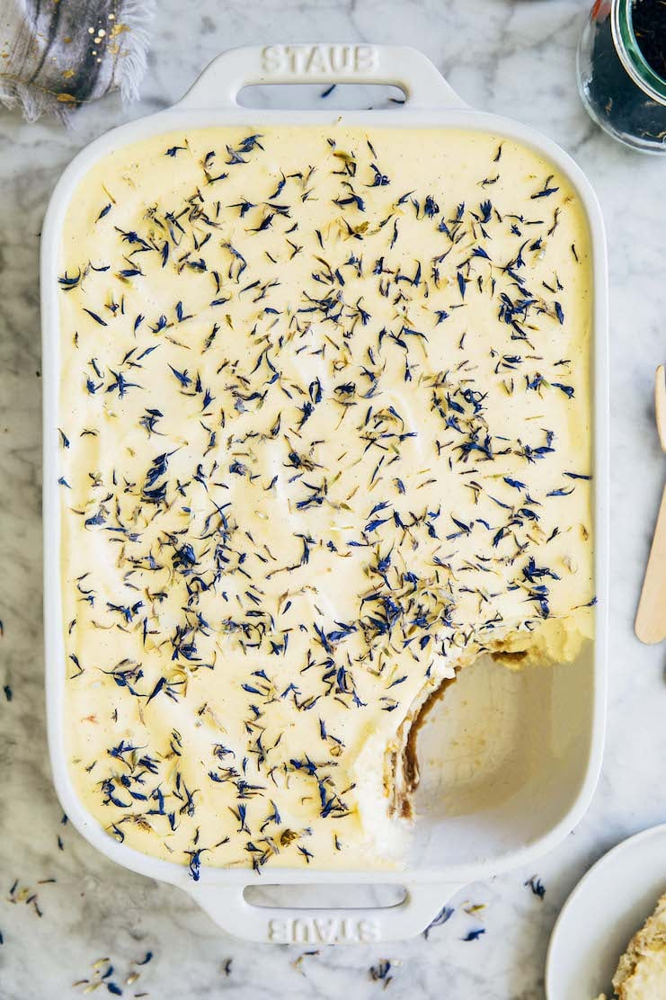

Home
Earl Grey Tiramisu

Description
This Earl Grey tiramisu is a delicious twist on tiramisu, a classic fancy dessert!
Instead of coffee or espresso, the ladyfingers are soaked in flavorful and
aromatic vanilla Earl Grey tea. The soaked ladyfingers are then layered with
vanilla mascarpone whipped cream. It's also a "no bake" recipe! Instead, you
chill the dessert in the refrigerator. Overnight, the ladyfingers soften and
absorb everything, turning into an airy, creamy, cloud-like, tea-flavoured
bowl dessert!
Ingredients
Earl Grey Tea Concentrate
- 1 1/2 cups water
- 3 tbsp loose leaf Earl Grey tea
- 1/4 cup granulated sugar
- 1 tbsp pure vanilla paste or extract
- pinch of kosher salt
Mascarpone Whipped Cream
- 1 1/4 cups cold heavy cream
- 1 8oz container cold mascarpone
- 1 tbsp pure vanilla paste or extract
- 4 large egg yolks
- 1/2 cup granulated sugar
- pinch of kosher salt
Assembly
Instructions
- First, make the Earl Grey tea concentrate.
- Bring the water to a boil in a heavy-bottomed, medium saucepan
over high heat. Add the Earl Grey tea and immediately reduce
the heat to medium-low. Simmer for 10 minutes.
- Place the sugar for the tea concentrate in a medium,
heatproof bowl.
- After 10 minutes, taste the concentrate. It should be
incredibly strong, almost bitter. If it's not quite there,
simmer for another 5 minutes.
- When the concentrate is ready, place a fine-mesh sieve over
the bowl with the sugar and strain the concentrate into the bowl.
Gently press on the tea leaves or bags with a heatproof spatula
and discard them. Whisk the concentrate to dissolve the sugar,
then whisk in the vanilla and salt.
- Set on a wire rack to cool slightly while you make the
mascarpone whipped cream.
- Make the mascarpone whipped cream.
- Whisk the cream on medium-high speed until soft peaks form, about
1 to 2 minutes.
- Add the mascarpone and vanilla for the whipped cream all at once.
Scrape down the bottom and sides of the bowl, then whisk the mascarpone
and vanilla into the whipped cream on medium speed until combined,
about 30 seconds.
- Transfer the whipped cream to a medium bowl.
- Whisk the egg yolks and sugar, then fold in the whipped cream.
Combine the egg yolks, sugar, and salt for the mascarpone whipped cream in the stand
mixer bowl (don't worry about cleaning the bowl!). Beat on medium-high speed until
light, fluffy, and doubled in volume, about 5 minutes. Scoop half of the whipped cream
over the egg mixture and fold it in with a rubber spatula. Repeat with the remaining
whipped cream and fold it in until just combined. At this point, it will be a very
light and fluffy cream.
- Assemble the Earl Grey tiramisu.
- Working with one ladyfinger at a time, dip a ladyfinger in the tea
concentrate, and turn to coat. Quickly place it in the pan to arrange
a single layer of cookies at the bottom of the pan.
- Scoop half of the mascarpone whipped cream over the ladyfingers and use
an offset spatula to spread it evenly over the cookies.
- Repeat the process of soaking the remaining ladyfingers and topping them
with the remaining mascarpone whipped cream to make the final 2 layers of
the Earl Grey tiramisu.
- Chill the Earl Grey tiramisu. Loosely cover the tiramisu with
plastic wrap. Refrigerate for at least 8 hours, preferably overnight.
- Serve and store. The tiramisu will keep, tightly covered
in plastic wrap or in an airtight container, for up to 3 days in the refrigerator.
Enjoy!
Back to Home Page